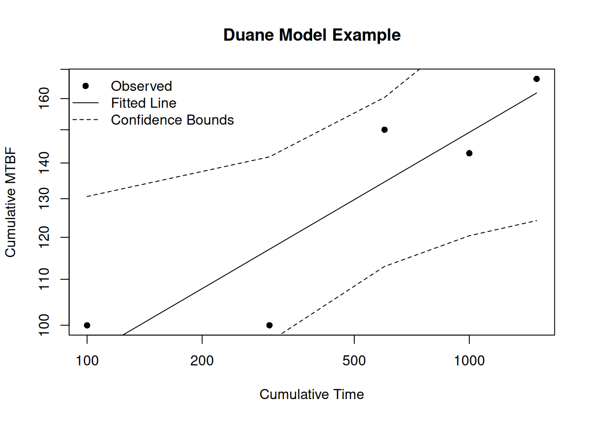
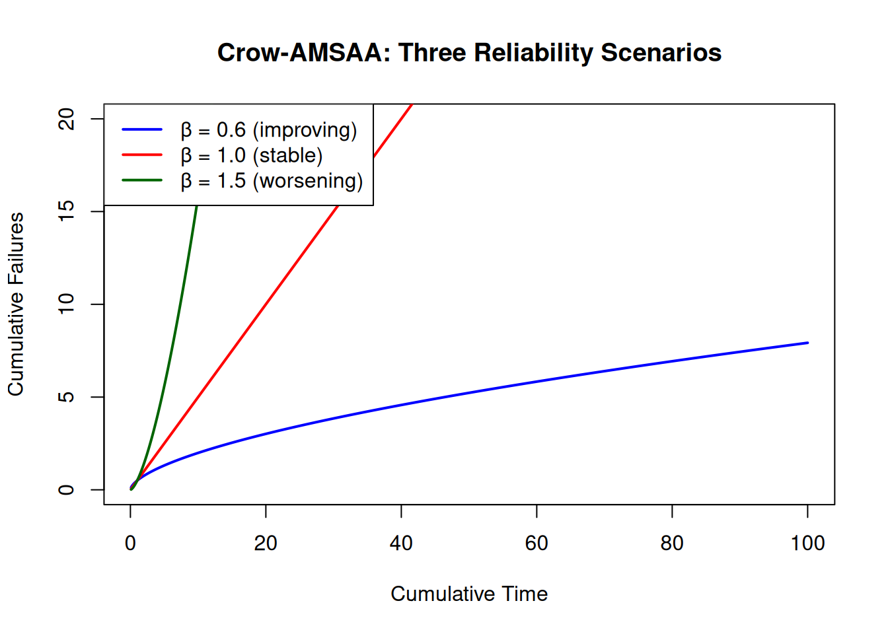
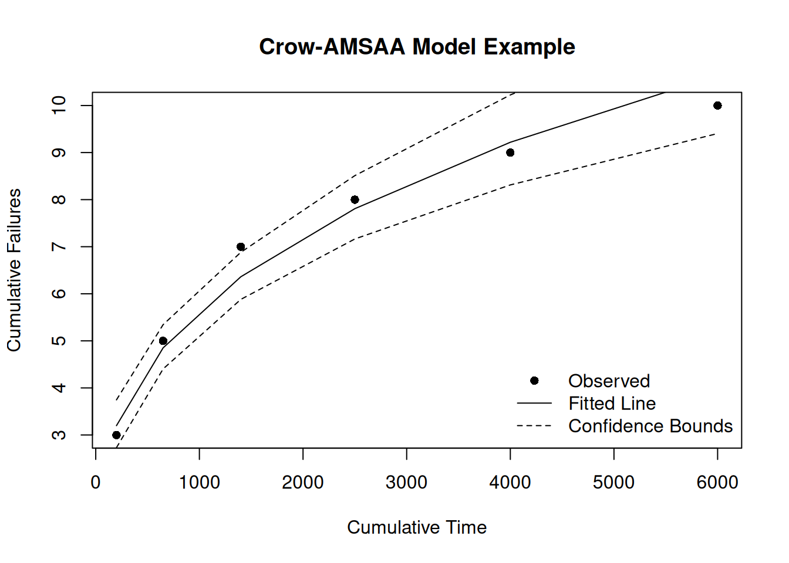
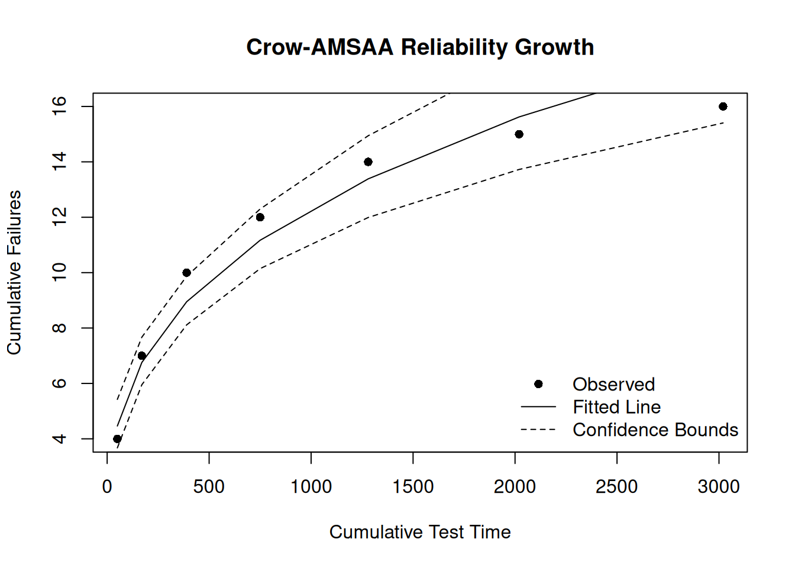
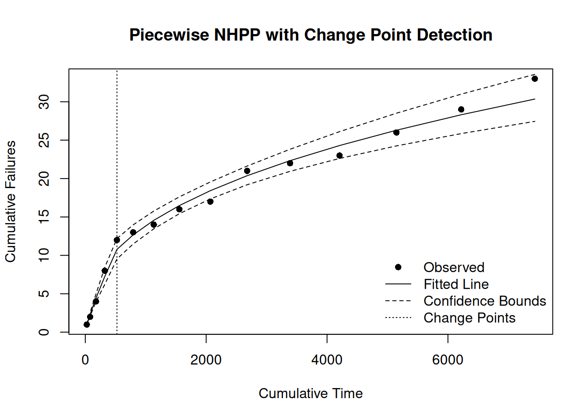

library(ReliaGrowR)4 Reliability Growth Analysis
4.1 Introduction
Reliability Growth Analysis (RGA) monitors and improves reliability over time by analyzing failure data collected during testing. It identifies trends in the failure rate, confirming whether corrective actions are having the intended effect.
4.2 Learning Objectives
By the end of this chapter, you will be able to:
- Define key reliability growth concepts: Crow-AMSAA and Duane models.
- Use
rdt()to plan a reliability demonstration test (required test time and sample size). - Fit reliability growth models using R.
- Apply the Crow-AMSAA model to assess reliability growth.
- Use piecewise NHPP models to detect design changes during testing.
- Forecast future failures from a fitted growth model using
predict_rga(). - Interpret reliability growth plots and make decisions from the results.
4.3 Reliability Growth Analysis
The ReliaGrowR package (Govan 2024) provides functions for reliability growth analysis in R.
4.4 Test Planning
Before analyzing test data, it helps to answer two design questions: How long must we test? and How many failures should we expect? ReliaGrowR provides tools for both.
Reliability Demonstration Tests — rdt()
A Reliability Demonstration Test (RDT) is a pass/fail test designed to demonstrate that a product meets a reliability target at a specified confidence level. rdt() calculates the required test time given the sample size (or vice versa).
# How long must we test 10 units to demonstrate R(1000 hrs) >= 0.90
# at 80% confidence? Assume Weibull shape beta = 2, zero allowable failures.
plan <- rdt(
target = 0.90, # target reliability
mission_time = 1000, # mission time (hours)
conf_level = 0.80, # confidence level
beta = 2, # assumed Weibull shape parameter
n = 10, # number of test units
f = 0 # allowable failures
)
print(plan)Reliability Demonstration Test (RDT) Plan
-----------------------------------------
Distribution: Weibull
Weibull Shape Parameter (Beta): 2
Allowed Failures (f): 0
Target Reliability: 0.9
Mission Time: 1000
Input Sample Size (n): 10
Required Test Time (T): 1235.94 Each unit must be tested for approximately 1,236 hours without failure. If the test passes, we have demonstrated \(R(1000) \geq 0.90\) with 80% confidence.
NoteTry It
Compare the required test time for sample sizes of 5, 10, and 20 units (keep all other parameters the same). What is the trade-off?
# Vary n to see the effect on required test time
for (n in c(5, 10, 20)) {
# plan <- rdt(target = 0.90, mission_time = 1000, conf_level = 0.80,
# beta = 2, n = n, f = 0)
# print(plan)
}Solution
for (n in c(5, 10, 20)) {
plan <- rdt(target = 0.90, mission_time = 1000, conf_level = 0.80,
beta = 2, n = n, f = 0)
print(plan)
}Reliability Demonstration Test (RDT) Plan
-----------------------------------------
Distribution: Weibull
Weibull Shape Parameter (Beta): 2
Allowed Failures (f): 0
Target Reliability: 0.9
Mission Time: 1000
Input Sample Size (n): 5
Required Test Time (T): 1747.89
Reliability Demonstration Test (RDT) Plan
-----------------------------------------
Distribution: Weibull
Weibull Shape Parameter (Beta): 2
Allowed Failures (f): 0
Target Reliability: 0.9
Mission Time: 1000
Input Sample Size (n): 10
Required Test Time (T): 1235.94
Reliability Demonstration Test (RDT) Plan
-----------------------------------------
Distribution: Weibull
Weibull Shape Parameter (Beta): 2
Allowed Failures (f): 0
Target Reliability: 0.9
Mission Time: 1000
Input Sample Size (n): 20
Required Test Time (T): 873.94 Forecasting Growth — predict_rga()
Once a growth test is underway, predict_rga() projects cumulative failures beyond the current endpoint — useful for deciding whether to continue testing or whether a reliability target will be met by a program deadline.
times <- c(100, 200, 300, 400, 500)
failures <- c(1, 2, 1, 3, 2)
fit <- rga(times, failures)
pred <- predict_rga(fit, times = seq(500, 1000, by = 100))
print(pred)Reliability Growth Forecast (Crow-AMSAA)
-----------------------------------------
Time Cum.Failures Lower (95%) Upper (95%)
500 3.9 3.2 4.6
600 4.5 3.7 5.3
700 5.0 4.2 6.1
800 5.6 4.6 6.8
900 6.2 5.0 7.6
1000 6.7 5.4 8.3The lower and upper bounds reflect the uncertainty in the Crow-AMSAA parameter estimates. A narrow interval indicates the growth trend is well characterized; a wide interval suggests more test time is needed.
TipReview
The fitted model (using the Crow-AMSAA framework, described fully below) gives \(\hat{\beta} = 0.72\). Is the system still improving at time 1,000?
Answer
Yes — for the Crow-AMSAA model, \(\beta < 1\) means the cumulative failure rate is decreasing (the growth curve is concave), so reliability is still improving at time 1,000. Testing should continue until \(\beta\) stabilizes near the growth target.4.5 The Duane Model
The Duane Model (Duane 1964) is one of the earliest and most widely used models for reliability growth. It is a log-log plot of cumulative MTBF vs cumulative time, where the MTBF is the total operating time divided by the number of failures up to that time.
\[\text{CMTBF}(t) = K \cdot t^{\beta - 1}\]
where \(K > 0\) is a scale parameter estimated from the data and \(\beta\) is the growth slope. The slope of the line on the log-log plot indicates the rate of reliability growth:
| Slope (\(\beta\)) | Meaning |
|---|---|
| \(> 1\) | Reliability improving (failure rate decreasing) |
| \(= 1\) | No change (stable) |
| \(< 1\) | Reliability worsening (failure rate increasing) |
Plotting the Duane model for three beta values:
t <- seq(1, 100, by = 0.1)
# Three scenarios
plot(log(t), log(0.1 * t^(1.5 - 1)), type = "l", col = "blue", lwd = 2,
xlab = "log(Cumulative Time)", ylab = "log(Cumulative MTBF)",
main = "Duane Plot: Three Reliability Growth Scenarios",
ylim = c(-4, 1))
lines(log(t), log(0.1 * t^(1.0 - 1)), col = "red", lwd = 2)
lines(log(t), log(0.1 * t^(0.6 - 1)), col = "darkgreen", lwd = 2)
legend("topleft",
legend = c("β = 1.5 (improving)", "β = 1.0 (stable)", "β = 0.6 (worsening)"),
col = c("blue", "red", "darkgreen"), lwd = 2)
Fitting with ReliaGrowR
times <- c(100, 200, 300, 400, 500)
failures <- c(1, 2, 1, 3, 2)
fit <- duane(times, failures)
plot(fit, main = "Duane Model Example",
xlab = "Cumulative Time", ylab = "Cumulative MTBF")
NoteTry It
A new system was tested and the following cumulative failure counts were recorded. Fit a Duane model and plot the result.
times <- c(200, 450, 750, 1100, 1500, 2000)
failures <- c(3, 2, 2, 1, 1, 1)
# fit <- duane(times, failures)
# plot(fit)Solution
times <- c(200, 450, 750, 1100, 1500, 2000)
failures <- c(3, 2, 2, 1, 1, 1)
fit <- duane(times, failures)
plot(fit, main = "Duane Reliability Growth Plot",
xlab = "Cumulative Test Time", ylab = "Cumulative MTBF")
TipReview
What does a Duane plot with a slope greater than 1 indicate?
Answer
The system’s reliability is improving — the failure rate is decreasing over time.4.6 The Crow-AMSAA Model
The Crow-AMSAA Model (Crow 1975) models cumulative failures vs cumulative time using a Non-Homogeneous Poisson Process (NHPP):
\[N(t) = \lambda_0 \cdot t^{\beta}\]
where \(\lambda_0 > 0\) is the scale parameter and \(\beta\) is the shape parameter.
The shape parameter \(\beta\) interpretation:
| \(\beta\) | Meaning |
|---|---|
| \(> 1\) | Failures increasing (reliability worsening) |
| \(= 1\) | Constant rate (stable) |
| \(< 1\) | Failures decreasing (reliability improving) |
Warningβ Interpretation is Reversed Between Models
The Crow-AMSAA \(\beta\) means the opposite of the Duane \(\beta\):
- Duane: \(\beta > 1\) = reliability improving (MTBF is rising).
- Crow-AMSAA: \(\beta > 1\) = reliability worsening (cumulative failures are accelerating).
This reversal occurs because Duane plots MTBF (higher is better), while Crow-AMSAA plots cumulative failures (a lower slope means fewer failures, so improving). Always check which model produced your \(\beta\) before interpreting the result.
t <- seq(0.1, 100, by = 0.1)
# Three beta scenarios for cumulative failures
plot(t, 0.5 * t^0.6, type = "l", col = "blue", lwd = 2,
xlab = "Cumulative Time", ylab = "Cumulative Failures",
main = "Crow-AMSAA: Three Reliability Scenarios",
ylim = c(0, 20))
lines(t, 0.5 * t^1.0, col = "red", lwd = 2)
lines(t, 0.5 * t^1.5, col = "darkgreen", lwd = 2)
legend("topleft",
legend = c("β = 0.6 (improving)", "β = 1.0 (stable)", "β = 1.5 (worsening)"),
col = c("blue", "red", "darkgreen"), lwd = 2)
Fitting with ReliaGrowR
result <- rga(times, failures)
plot(result, main = "Crow-AMSAA Model Example",
xlab = "Cumulative Time", ylab = "Cumulative Failures")
NoteTry It
A development test recorded these cumulative failure counts. Use rga() with model_type = "Crow-AMSAA" to fit the model.
times <- c(50, 120, 220, 360, 530, 740, 1000)
failures <- c(4, 3, 3, 2, 2, 1, 1)
# fit <- rga(times, failures, model_type = "Crow-AMSAA")
# plot(fit)Solution
times <- c(50, 120, 220, 360, 530, 740, 1000)
failures <- c(4, 3, 3, 2, 2, 1, 1)
fit <- rga(times, failures, model_type = "Crow-AMSAA")
plot(fit, main = "Crow-AMSAA Reliability Growth",
xlab = "Cumulative Test Time", ylab = "Cumulative Failures")
The Piecewise NHPP Model
The Piecewise NHPP fits a separate Power Law to each segment of the time axis, separated by breakpoints. This is useful when a design change occurs during testing.
\[N_i(t) = N(t_{i-1}) + \lambda_i (t - t_{i-1})^{\beta_i}, \quad t_{i-1} < t \leq t_i\]
times <- c(25, 55, 97, 146, 201, 268, 341, 423, 513, 609, 710, 820, 940, 1072, 1217)
failures <- c(1, 1, 2, 4, 4, 1, 1, 2, 1, 4, 1, 1, 3, 3, 4)
breaks <- 500
result <- rga(times, failures, model_type = "Piecewise NHPP", breaks = breaks)
plot(result, main = "Piecewise NHPP Model",
xlab = "Cumulative Time", ylab = "Cumulative Failures")
The two segments have different slopes — the first segment (pre-change) has a higher slope than the second (post-change), confirming the design change reduced the failure rate.
Change Point Detection
Without a known breakpoint, rga() can detect the change point automatically:
result_auto <- rga(times, failures, model_type = "Piecewise NHPP")
plot(result_auto, main = "Piecewise NHPP with Change Point Detection",
xlab = "Cumulative Time", ylab = "Cumulative Failures")
The automatically detected change point is near time 500, consistent with the known design change.
4.7 Summary
Key takeaways:
- Duane model: log-log of MTBF vs time; positive slope (\(\beta > 1\)) = improving.
- Crow-AMSAA: log of cumulative failures vs time; concave downward = improving (\(\beta < 1\)).
- Piecewise NHPP: fits multiple segments; use when a known change occurs during testing.
- For accelerated life testing (Arrhenius, Power Law, relationship plots), see Chapter 5.
Crow, Larry H. 1975. Reliability Analysis for Complex, Repairable Systems. Army Material Systems Analysis Activity. https://apps.dtic.mil/sti/citations/ADA020296.
Duane, J. T. 1964. “Learning Curve Approach to Reliability Monitoring.” IEEE Transactions on Aerospace 2: 563–66. https://doi.org/10.1109/TA.1964.4319640.
Govan, Paul. 2024. ReliaGrowR: Reliability Growth Analysis. https://doi.org/10.32614/CRAN.package.ReliaGrowR.